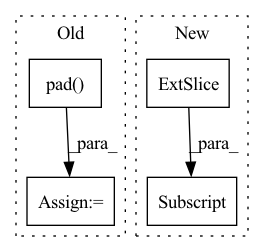

Pattern ID :2579
Before Change
// image can attend to all of text
mask = F.pad( mask, (text_len, 0), value = True)
dots_image.masked_fill_(~mask, mask_value)
attn_image = dots_image.softmax(dim = -1)
out_image = einsum("b i j, b i j d -> b i d", attn_image, v_img)After Change
mask = default(mask, lambda: torch.ones(b, text_len, device = device).bool())
x = F.pad(x, (0, 0, 0, padding), value = 0)
mask = mask[:, :text_len]
// derive query / keys / values
qkv = self.to_qkv(x).chunk(3, dim = -1)In pattern: SUPERPATTERN
Frequency: 4
Non-data size: 4
Instances Fragment ID: 8370719
Project Name: lucidrains/dalle-pytorch
Commit Name: c27f48c4373942167a0cc2ac2238f67af2479fe3
Time: 2021-02-14
Author: lucidrains@gmail.com
File Name: dalle_pytorch/attention.py
M Class Name: SparseConvCausalAttention
N Class Name: SparseConvCausalAttention
M Method Name: forward(3)
N Method Name: forward(3)
M Parent Class: nn.Module
N Parent Class: nn.Module
M File Name: dalle_pytorch/attention.py
N File Name: dalle_pytorch/attention.py
M Start Line: 92
M End Line: 154
N Start Line: 92
N End Line: 164
Before Change
x = x.unsqueeze(0)
x = torch.sign(x)
x = self.pad( x)
x = x.unfold(-1, self.frame_length + 1, self.frame_length)
z = 0.5 * torch.abs(x[..., 1:] - x[..., :-1]).sum(-1)
if self.norm:
z = z / self.frame_length
for _ in range(3 - d):
z = z.squeeze(0)
return z
After Change
x = torch.sign(x)
x = torch.cat((x[..., :1] , x), dim=-1)
x = x.unfold(-1, self.frame_length + 1, self.frame_length)
z = 0.5 * torch.abs(x[..., 1:] - x[..., :-1]).sum(-1)
if self.norm: Fragment ID: 8370716
Project Name: sp-nitech/diffsptk
Commit Name: c71e34ed516f1d63687f4f2135d421d08cedfd44
Time: 2022-04-15
Author: takenori.yoshimura24@gmail.com
File Name: diffsptk/core/zcross.py
M Class Name: ZeroCrossingAnalysis
N Class Name: ZeroCrossingAnalysis
M Method Name: forward(2)
N Method Name: forward(2)
M Parent Class: nn.Module
N Parent Class: nn.Module
M File Name: diffsptk/core/zcross.py
N File Name: diffsptk/core/zcross.py
M Start Line: 69
M End Line: 82
N Start Line: 67
N End Line: 68
Before Change
) -> Tuple[Tensor, Tensor, Tensor, Tensor]:
feat_spec = feat_spec.squeeze(1).permute(0, 3, 1, 2)
feat_erb = self.pad( feat_erb)
feat_spec = self.pad(feat_spec)
e0, e1, e2, e3, emb, c0, lsnr = self.enc(feat_erb, feat_spec)
m = self.erb_dec(emb, e3, e2, e1, e0)
After Change
// Legacy mode only pads the lower part of the spectrum.
spec_f = self.pad_spec(spec)
spec_f = self.df_op(spec_f, df_coefs)
spec[..., : self.nb_df, :] = spec_f[..., : self.nb_df, :]
else:
spec = self.pad_spec(spec)
spec = self.df_op(spec, df_coefs)
else: Fragment ID: 8370714
Project Name: rikorose/deepfilternet
Commit Name: a02877c94eb3c65d15ea256da7fb5a5193f6596a
Time: 2022-05-11
Author: h.schroeter@pm.me
File Name: DeepFilterNet/df/deepfilternet2.py
M Class Name: DfNet
N Class Name: DfNet
M Method Name: forward(4)
N Method Name: forward(4)
M Parent Class: nn.Module
N Parent Class: nn.Module
M File Name: DeepFilterNet/df/deepfilternet2.py
N File Name: DeepFilterNet/df/deepfilternet2.py
M Start Line: 488
M End Line: 504
N Start Line: 431
N End Line: 456
Before Change
padding = seq_len - n
mask = default(mask, lambda: torch.ones(b, n, device = device).bool())
x = F.pad(x, (0, 0, 0, padding), value = 0)
mask = F.pad( x, (0, padding), value = False)
qkv = self.to_qkv(x).chunk(3, dim = -1)
q, k, v = map(lambda t: rearrange(t, "b n (h d) -> (b h) n d", h = h), qkv)
After Change
mask = default(mask, lambda: torch.ones(b, text_len, device = device).bool())
x = F.pad(x, (0, 0, 0, padding), value = 0)
mask = mask[:, :text_len]
// derive queries / keys / values
qkv = self.to_qkv(x).chunk(3, dim = -1) Fragment ID: 8370721
Project Name: lucidrains/dalle-pytorch
Commit Name: c27f48c4373942167a0cc2ac2238f67af2479fe3
Time: 2021-02-14
Author: lucidrains@gmail.com
File Name: dalle_pytorch/attention.py
M Class Name: SparseAxialCausalAttention
N Class Name: SparseAxialCausalAttention
M Method Name: forward(3)
N Method Name: forward(3)
M Parent Class: nn.Module
N Parent Class: nn.Module
M File Name: dalle_pytorch/attention.py
N File Name: dalle_pytorch/attention.py
M Start Line: 191
M End Line: 241
N Start Line: 201
N End Line: 259